Vizualizacija podataka
Vježba 02
Vježba 02
- Nastavljamo sa izradom grafova, ovaj put malo složenijim
- Postupak izrade grafa
- koraci
- Analiza podataka
- korelacija
- Vremenski skup podataka
- rosište (dew point) - temperatura pri kojoj nastaje kondenzacija u zraku
- vlažnost (humidity) - količina vodene pare u zraku
- Postoji li korelacija?
- to je cilj vizualizacije
Vježba 02
- Odabir vrste grafa
- kada želimo promatrati odnos između dvije mjere, graf raspršenosti (scatterplot) je uvijek dobar izbor
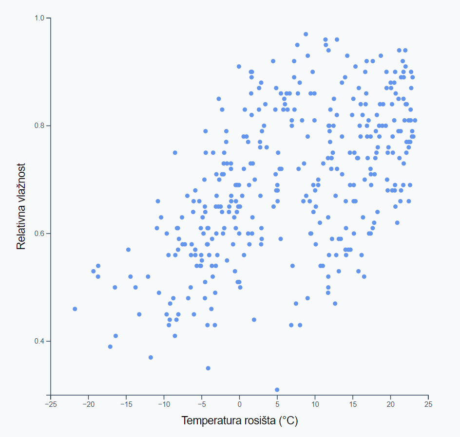
- Scatterplot sadrži dvije osi
- x os koristimo za jednu metriku
- y os za drugu promatranu metriku
- Svaki podatak (data point) ćemo prikazati kao jednu točku
- u našem skupu podataka imamo dnevne podatke
Koraci izrade grafa
- Cijeli postupak izrade grafa možemo podijeliti u nekoliko koraka
- Pristupanje podacima
- pregled strukture podataka i odabir pristupa vrijednostima
- Definiranje dimenzija grafa
- određivanje fizičkih parametara grafa (pikseli)
- Crtanje površine grafa
- renderiranje okvira i granica
- Definiranje razmjera
- skaliranje podataka u fizičke granice
- Iscrtavanje podataka
- renderiranje podatkovnih elemenata
- Crtanje pomoćne grafike
- prikaz osi, oznaka, legende
- Postavljanje interakcija
- osluškivanje događaja i ponašanje
Vježba 02
- Početak
- sa stranice kolegija preuzmite datoteku "vj02_pocetak"
- otpakirajte cijeli projekt i otvorite u VS code
- Ponovno koristimo skup podataka "vrijeme.json"
- Projekt sadrži d3.js biblioteku, font koji ćemo koristiti te CSS datoteku za oblikovanje
- Započinjemo vježbu sa datotekom "scatter.js" koja već ima napisanu praznu asinkronu funkciju
async function crtajScatter() {
// ovdje pisemo kôd vježbe
}
crtajScatter()1. Pristupanje podacima
- Ovaj dio nam je poznat iz prethodne vježbe:
- učitati ćemo dataset sa d3.json()
- možemo ga provjeriti sa console.log() ili console.table()
- nakon što pronađemo ključeve traženih vrijednosti napisati ćemo accessor funkcije za oba podatka
- temperatura rosišta je navedena u °F pa ćemo je odmah pretvoriti u °C
let dataset = await d3.json("vrijeme.json")
console.log(dataset[0])
const xAccessor = data => (data.dewPoint - 32) * 0.5556
const yAccessor = data => data.humidity2. Dimenzije grafa
- Idući korak je definiranje dimenzija grafa
- scatterplot je obično pravokutnog oblika
- Želimo imati što veći prikaz ali da ostane u granicama ekrana
- Uzeti ćemo manju od dimenzija ekrana i to koristiti kao mjeru
const sirina = d3.min([
window.innerWidth * 0.9,
window.innerHeight * 0.9
]);- Kad već koristimo d3 biblioteku, metoda d3.min() je bolja opcija od ugrađene Math.min jer ima dodatne mogućnosti kao ignoriranje null i undefined vrijednosti, preskakanje vrijednosti koje se ne mogu pretvoriti u broj, te obradu stringova
2. Dimenzije grafa
- Ponovno ćemo napraviti objekt u kojem ćemo zapisati dimenzije okvira, granica i margina našeg grafa
- Za okvir koristimo dimenzije prozora koje smo prethodno izračunali
- Granice grafa računamo oduzimanjem margina od okvira
let dimenzije = {
sirina: sirina, // varijabla iz prethodnog koraka
visina: sirina, // zadrzavamo pravokutne dimenzije
margine: {
top: 10,
right: 10,
bottom: 50,
left: 50,
},
}
// Racunamo dimenzije granica
dimenzije.grSirina = dimenzije.sirina - dimenzije.margine.left - dimenzije.margine.right
dimenzije.grVisina = dimenzije.visina - dimenzije.margine.top - dimenzije.margine.bottom3. Crtanje grafa
- Idući korak je crtanje grafa koristeći SVG elemente
- Za početak dohvaćamo postojeći DOM element iz HTML-a i dodajemo mu <svg> element
const okvir = d3.select("#okvir")
.append("svg")
.attr("width", dimenzije.sirina)
.attr("height", dimenzije.visina)- Također ćemo definirati i granice okvira pomoću g elementa
const granice = okvir.append("g").style(
"transform",
`translate(
${dimenzije.margine.left}px,
${dimenzije.margine.top}px
)`
);3. Crtanje grafa
- Ako smo sve ispravno napravili, u pregledniku bi trebali vidjeti naš SVG pravokutnih dimenzija sa praznim g elementom
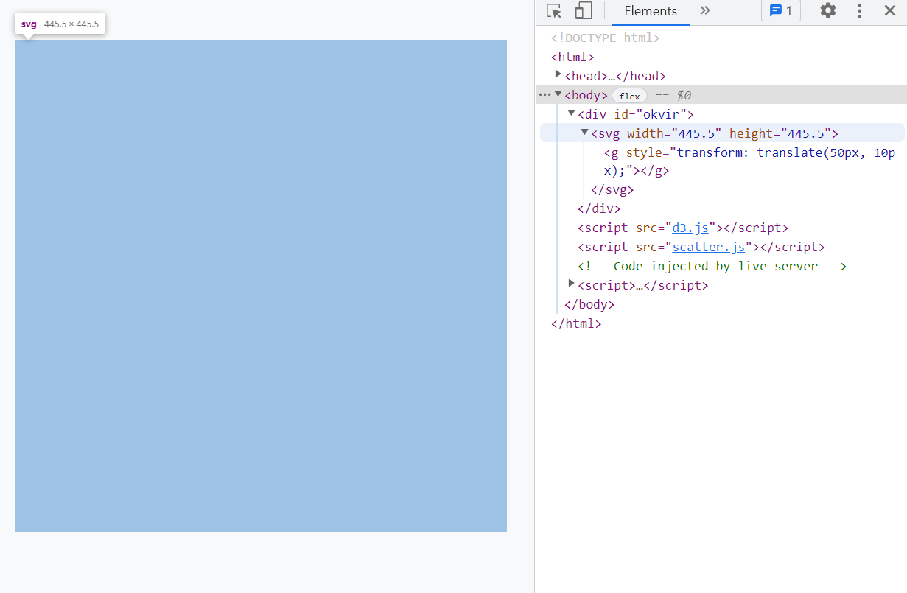
4. Definiranje razmjera
- Prije crtanja podataka moramo im odrediti razmjer tj. definirati na koji način će se skalirati
- Podsjetimo se, imamo dva skupa vrijednosti
- domena podataka - raspon vrijednosti iz skupa podataka
- raspon piksela - fizički prostor za prikaz vrijednosti
- Možemo iskoristiti ugrađene metode skaliranja iz d3 biblioteke ali moramo znati raspone oba skupa
- raspon piskela nam je jednostavno izračunati (sami smo odredili dimenzije granica prikaza)
- raspon podataka moramo izračunati iz skupa podataka, za tu svrhu također imamo ugrađene metode
4. Definiranje razmjera
- Krećemo od x osi i vrijednosti rosišta
- Koristimo metodu d3.scaleLinear() za linearno skaliranje
- Također koristimo d3.extent() koja prima 2 argumenta:
- niz (podataka)
- accessor funkciju koja dohvaća vrijednost iz data point-a
- kao rezultat vraća niz [min, max]
const xSkala = d3.scaleLinear()
.domain(d3.extent(dataset, xAccessor))
.range([0, dimenzije.grSirina])4. Definiranje razmjera
- Zadržimo se kratko na našem skaliranju x osi
- pogledajmo koja nam je domena vrijednosti
- možemo je vidjeti pozivom .domain() bez slanja argumenata
console.log(xSkala.domain())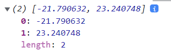
- Sjetite se da skalu koristimo i za definiranje oznaka na osi
- rezultat domene nam nisu baš prikladne vrijednosti
- koristimo metodu .nice() koja zaokružuje granice domene
const xSkala = d3.scaleLinear()
.domain(d3.extent(dataset, xAccessor))
.range([0, dimenzije.grSirina])
.nice()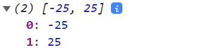
4. Definiranje razmjera
- Skaliranje y osi je gotovo identično kao x os
- koristimo drugi accessor
- raspon piksela se razlikuje od x osi
- Pokušajte samostalno napisati poziv metode
- na kraju testirajte raspon domene
const ySkala = d3.scaleLinear()
.domain(d3.extent(dataset, yAccessor))
.range([dimenzije.grVisina, 0])
.nice()
console.log(ySkala.domain())5. Iscrtavanje podataka
- Došli smo do dijela iscrtavanja podataka na graf
- ovaj korak se malo razlikuje u odnosu na prethodnu vježbu
- više nemamo pravac između podataka
- želimo iscrtati jedan element za svaki podatak
- Koristiti ćemo SVG element <circle> sa tri atributa
- cx - x koordinata središta kruga
- cy - y koordinata središta kruga
- r - radijus kružnice
- Pokušajmo nacrtati krug na središtu grafa
granice.append("circle")
.attr("cx", dimenzije.grSirina / 2)
.attr("cy", dimenzije.grVisina / 2)
.attr("r", 5)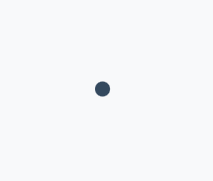
5. Iscrtavanje podataka
- Sada znamo crtati kružnice pa možemo iscrtati podatke
- Klasični način bi bio korištenjem petlje (npr. forEach)
dataset.forEach(dp => {
granice
.append("circle")
.attr("cx", xSkala(xAccessor(dp)))
.attr("cy", ySkala(yAccessor(dp)))
.attr("r", 3);
});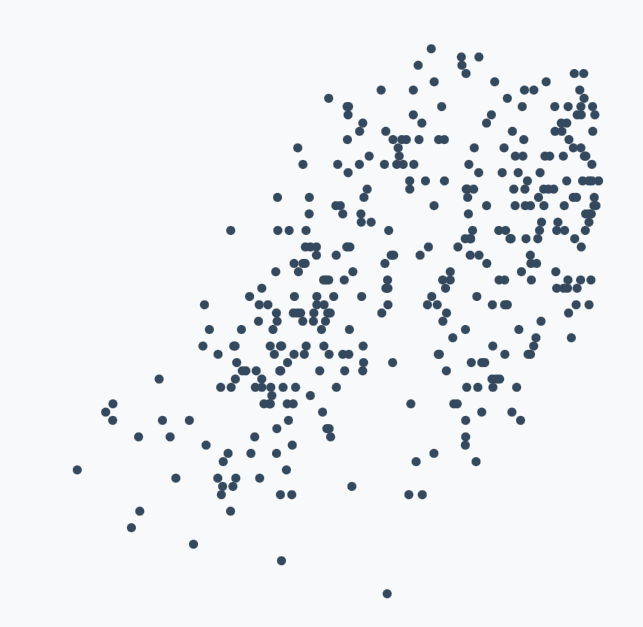
5. Iscrtavanje podataka
- Iako je prethodni primjer tehnički ispravan (podaci se iscrtavaju), takav način iscrtavanja nije najbolji izbor
- jedan od problema je što sa korištenjem petlje dobivamo novu razinu ugnježđivanja u kôdu - sjetite se kako pišemo npr. accessor metode - i one bi se mogle napisati sa petljom
- drugi problem je mogućnost osvježavanja podataka, ako ponovno pozovemo ovu metodu dobiti ćemo novi skup točaka - gubimo mogućnost interakcije
- Iskoristiti ćemo mogućnosti d3 biblioteke kako bi riješili navedene probleme
Spajanje podataka
- Izbrišite funkciju (petlju) za crtanje točaka
- Započeti ćemo sa d3 metodom za selekciju .selectAll()
- radi slično kao .select(), samo dohvaća sve tražene elemente
const tocke = granice.selectAll("circle")
console.log(tocke)- Na prvi pogled ovo izgleda čudno jer trenutno nemamo niti jedan circle element
- stvaramo selection objekt koji pamti stanje podataka - trenutno je prazno
- ovo je važno u situacijama kada imamo već postojeće podatke i želimo ih nadograditi ili modificirati
Spajanje podataka
- Idući korak je korištenje metode .data() koja služi kako bi nekoj d3 selekciji pridružili željeni skup podataka (dataset)
const tocke = granice.selectAll("circle")
.data(dataset)
console.log(tocke)- Prije nego nastavimo sa iscrtavanjem, malo ćemo se detaljnije osvrnuti na prethodna dva koraka
Spajanje podataka
- Pogledajmo stanje selekcije prije i poslije .data() metode
const tocke = granice
.selectAll("circle")
.data(dataset)
console.log(tocke)const tocke = granice
.selectAll("circle")
console.log(tocke)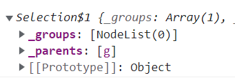
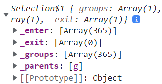
Spajanje podataka
- Naša selekcija ima 3 niza koja nas zanimaju
- _enter - sadrži podatkovne točke (data points) koje još nemaju renderirani element (novi podaci)
- _exit - podatkovne točke koje su već renderirane ali se ne nalaze u pridruženom skupu podataka
- _groups - trenutno odabrani DOM elementi
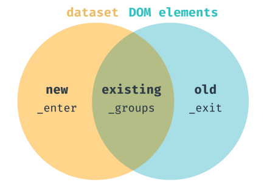
Spajanje podataka
- Cilj nam je napraviti novu selekciju koja će sadržavati samo nove elemente - to radimo pozivom metode .enter()
const tocke = granice.selectAll("circle")
.data(dataset)
.enter()
console.log(tocke)- Sada ponovno imamo selekciju sa kakvom smo i prije radili
- Možemo jednostavno pozvati .append() metodu i iscrtati sve točke
Spajanje podataka
- Konačni izgled metode za iscrtavanje točaka izgleda ovako
- Ako pogledamo redoslijed pozivanja metoda, proces je slijedeći
- odaberi sve circle elemente (nema ih - prazan niz)
- pridruži selekciji skup podataka (stvara se _enter niz)
- dohvati nove podatke (iz _enter niza)
- svakom podatku iz niza pridruži circle element
- postavi atribute circle elementa
const tocke = granice.selectAll("circle")
.data(dataset)
.enter().append("circle")
.attr("cx", dp => xSkala(xAccessor(dp)))
.attr("cy", dp => ySkala(yAccessor(dp)))
.attr("r", 3);
.attr("fill", "#6495ed")Spajanje podataka
- Kako bi bolje shvatili proces spajanja podataka ponoviti ćemo postupak iscrtavanja ali u dva koraka - dio po dio
- Napisati ćemo funkciju za iscrtavanje koja prima podatke i boju
- u sredini ispisujemo stanje selekcije
const crtajTocke = (podaci, boja) => {
// Selekcija + pridruzivanje podataka
const tocke = granice.selectAll("circle").data(podaci)
//Ispisujemo stanje selekcije
console.log(tocke)
// Dohvacemo ulazne podatke i iscrtavamo ih
tocke.enter().append("circle")
.attr("cx", d => xSkala(xAccessor(d)))
.attr("cy", d => ySkala(yAccessor(d)))
.attr("r", 4)
.attr("fill", boja)
}Spajanje podataka
- Zatim pozivamo funkciju 2 puta:
- prvi put sa dijelom dataset-a
- drugi put sa cijelim dataset-om (i jednom sekundom odgode)
crtajTocke(dataset.slice(0,200), "darkgrey")
setTimeout( ()=> {
crtajTocke(dataset, "blue")
}, 1000)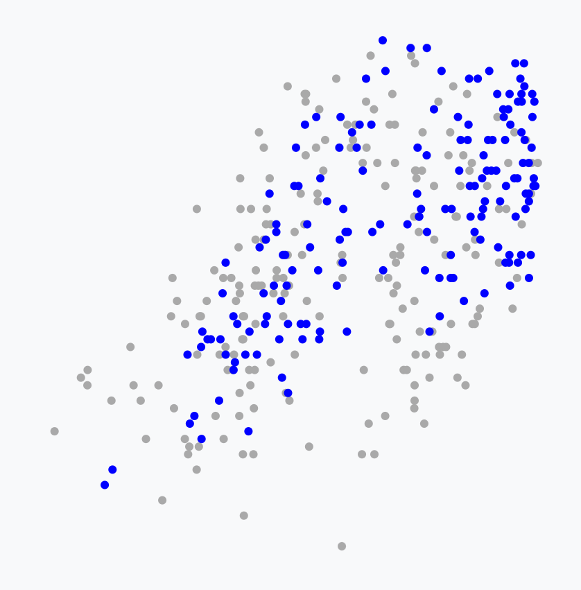
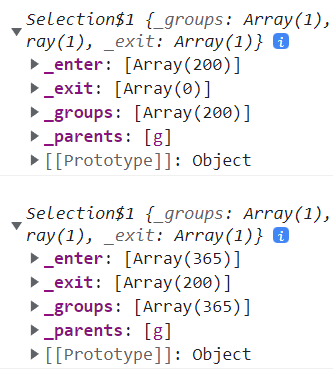
.merge()
- U prethodnom primjeru se samo nove točke prikazuju plavom bojom (stare se ne iscrtavaju ponovno!)
- Što ako želimo sve prikazati istom bojom
- možemo iz naknadno odabrati sa .selectAll()
- bolja opcija je koristiti .merge() metodu koja spaja dvije selekcije
const crtajTocke = (podaci, boja) => {
const tocke = granice.selectAll("circle").data(podaci)
tocke.enter().append("circle")
.merge(tocke) // Spajemo enter selekciju sa postojecom
.attr("cx", d => xSkala(xAccessor(d)))
.attr("cy", d => ySkala(yAccessor(d)))
.attr("r", 4)
.attr("fill", boja)
}.join()
- Modul d3-selection od verzije 1.4.0 ima novu metodu .join()
- Ova metoda je zapravo poziv .enter(), .append() i .merge() metoda zajedno ( i još nekih za sad nepoznatih)
- U praksi to znači da ovaj kod...
const crtajTocke = (podaci, boja) => {
const tocke = granice.selectAll("circle").data(podaci)
tocke.enter().append("circle")
.merge(tocke)
.attr("cx", d => xSkala(xAccessor(d)))
.attr("cy", d => ySkala(yAccessor(d)))
.attr("r", 4)
.attr("fill", boja)
}.join()
- Modul d3-selection od verzije 1.4.0 ima novu metodu .join()
- Ova metoda je zapravo poziv .enter(), .append() i .merge() metoda zajedno ( i još nekih za sad nepoznatih)
- ...možemo pisati ovako
const crtajTocke = (podaci, boja) => {
const tocke = granice.selectAll("circle").data(podaci)
tocke.join("circle")
.attr("cx", d => xSkala(xAccessor(d)))
.attr("cy", d => ySkala(yAccessor(d)))
.attr("r", 4)
.attr("fill", boja)
}6. Crtanje pomoćne grafike
- Vratimo se na proces izrade vizualizacije i prikaza osi
- Prvo ćemo iscrtati x os sa:
- horizontalnom linijom na dnu
- razmaknutim oznakama koje sadrže vrijednosti
- te natpisom koji opisuje samu os
- Dio zadatka nam je poznat od prošle vježbe
- definiramo funkciju za os (kojoj šaljemo skalu)
- pozivamo funkciju unutar g elementa
- pomičemo oznaku na dno granica
const xOsGen = d3.axisBottom().scale(xSkala)
const xOs = granice.append("g")
.call(xOsGen)
.style("transform",
`translateY(${dimenzije.grVisina}px)`)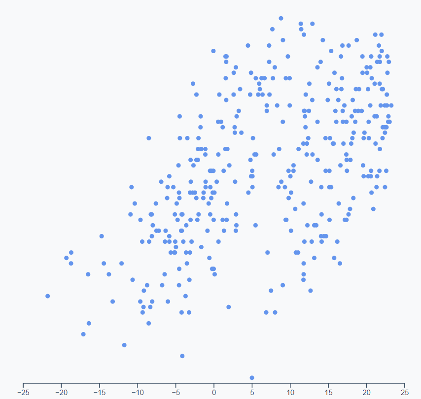
6. Crtanje pomoćne grafike
- Možemo uočiti kako nam je metoda nice() generirala "okrugle" vrijednosti prilikom definiranja razmjera
- Još nam preostaje dodati opis osi
- to ćemo napraviti dodavanjem text elementa
- kojeg ćemo dodatno oblikovati*
- te mu postaviti sadržaj pomoću .html() metode
- to ćemo napraviti dodavanjem text elementa
const xOsOznaka = xOs.append("text")
.attr("x", dimenzije.grSirina / 2)
.attr("y", dimenzije.margine.bottom - 10)
.attr("fill", "black")
.style("font-size", "1.5em")
.html("Temperatura rosišta (°C)")*Tekst dodajemo na g element koji sadrži oznaku osi, pa su koordinate u odnosu na taj element, a ne cijeli SVG grafa
6. Crtanje pomoćne grafike
- Moramo još napraviti oznaku za y os
- pokušati ćemo smanjiti broj crtica na vertikalnoj osi kako bi konačni rezultat bio pregledniji
- iskoristiti ćemo metodu .ticks() za podešavanje broja crtica
- argument koji šaljemo metodi je preporuka (ili želja)
- stvarni broj crtica ovisi o rasponu vrijednosti
- d3 pokušava zadržati pravilne intervale
const yOsGen = d3.axisLeft()
.scale(ySkala)
.ticks(4)
const yOs = granice.append("g")
.call(yOsGen)6. Crtanje pomoćne grafike
- Zadnji korak nam je dodavanje opisa (teksta) uz labelu
- problem je što tekst moramo rotirati
- to možemo napraviti pomoću CSS-a
- nakon rotacije x i y su nam zamijenjene...
- problem je što tekst moramo rotirati
const yOsOznaka = yOs.append("text")
.attr("x", -dimenzije.grVisina / 2)
.attr("y", -dimenzije.margine.left + 15)
.attr("fill", "black")
.style("font-size", "1.5em")
.html("Relativna vlažnost")
.style("transform", "rotate(-90deg)")
.style("text-anchor", "middle")*Dok se ne priviknete na pozicioniranje elemenata, uvijek ih možete postaviti na (0,0) te empirički (metodom pokušaja i pogreške) utvrditi koje su ispravne koordinate elementa
7. Postavljanje interakcija
- Sada imamo ispravno nacrtani graf sa svim oznakama
- Idući korak je dodavanje interakcije
- ali to ne spada u gradivo ove vježbe...
Sažetak
- .nice() - metoda za zaokruživanje raspona
- <circle> - SVG element za crtanje kružnice sa (x, y, r) svojstvima
- .selectAll() - odabir svih elemenata zadanog tipa
- .data() - pridruživanje skupa podataka nekoj selekciji
- _enter - niz sa ulaznim podacima (koji još nisu iscrtani)
- _exit - iscrtani podaci koji nisu u pridruženom skupu podataka
- _groups - trenutno odabrani elementi u selekciji
- .enter() - dohvat vrijednosti iz _enter niza
- .exit() - dohvate elemenata iz _exit niza
- .merge() - spajanje dvije selekcije
- .join() - alternativni način spajanja novih elemenata
-
<text> - SVG element za prikaz teksta
- .html() - metoda za stvaranje child elementa unutar <text>-a
- .ticks() - željeni broj crtica na oznakama osi
ZADATAK
- Pokušajte na postojeću vizualizaciju dodati još jednu metriku
- skup podataka ima i metriku za oblačnost (cloudCover)
- Želimo dodati novu dimenziju na način da točke na grafu obojimo različitim nijansama boje, ovisno o vrijednosti naoblake za taj dan
- moramo napraviti novu skalu za boju
- raspon krajnjih vrijednosti ne moraju biti samo pikseli, možemo definirati i raspon između dvije boje
- jednom kad imat skalu pomoću accessora možemo pretvarati bilo koju vrijednost iz podataka u vrijednost boje
- umjesto da sve točke obojimo istom bojom, možemo očitati vrijednost naoblake za taj dan, dobiti odgovarajuću boju pomoću skale i upotrijebiti je za crtanje kružnice
- moramo napraviti novu skalu za boju